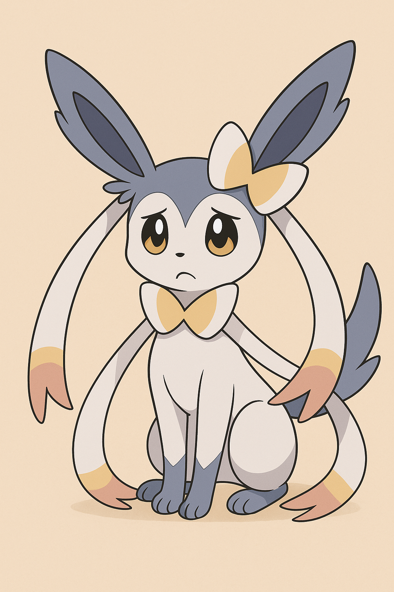
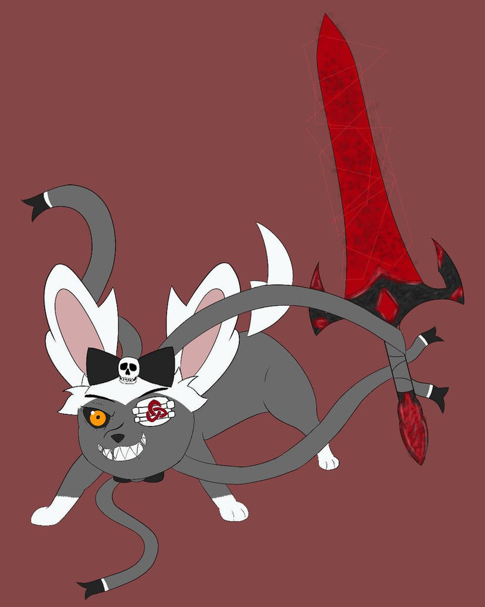
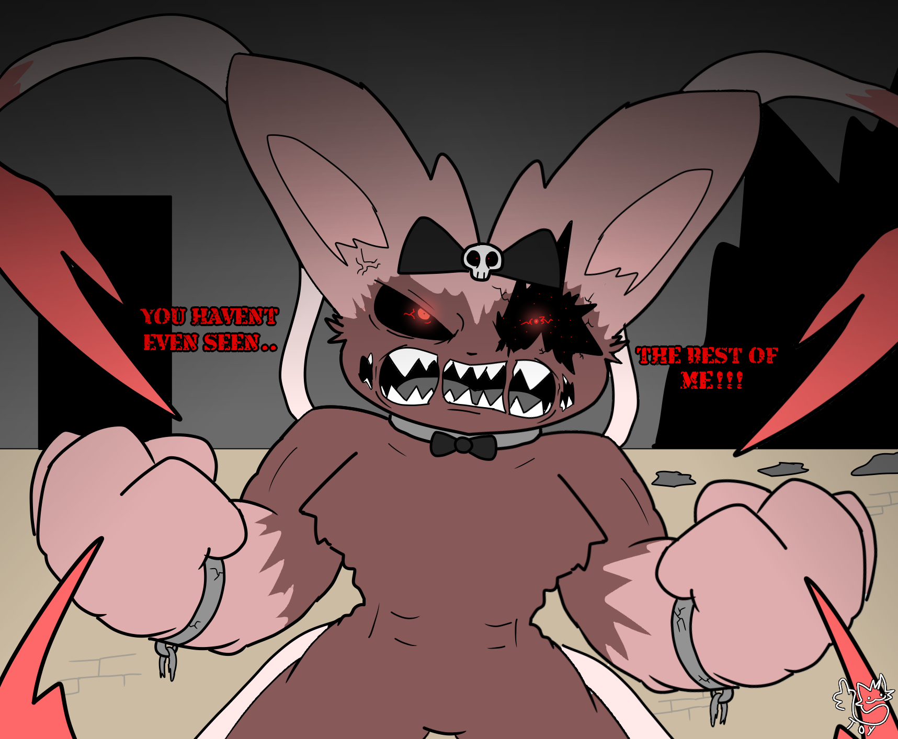
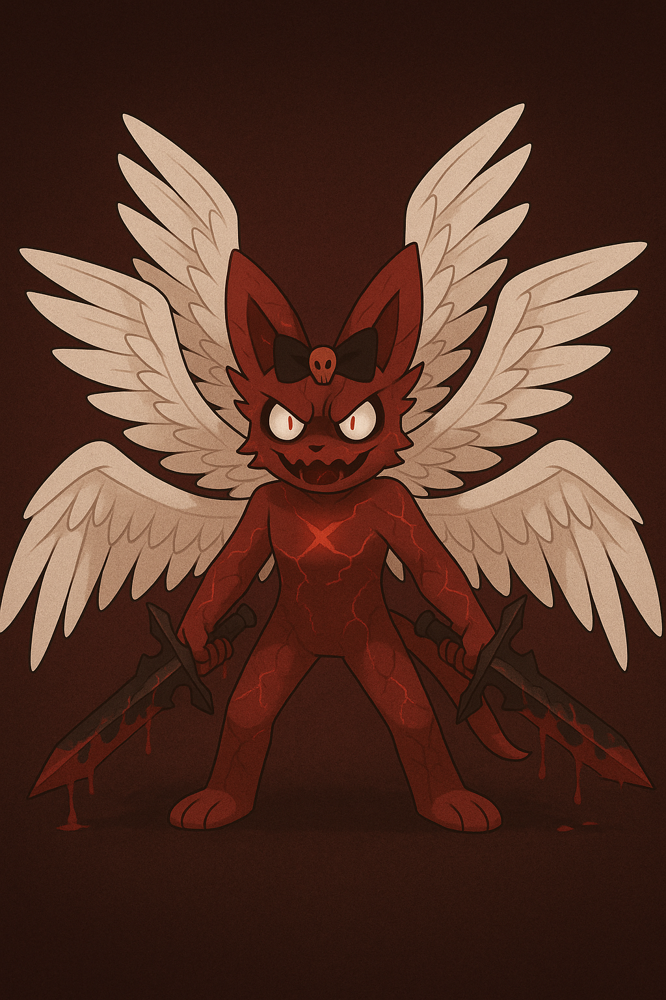

ABYROS / EJECUTOR
ENTIDAD VIVA-CORROMPIDA // ANÁLISIS COMPLETO DE TRANSFORMACIONES

FASE 0 — INNOCENT SHINY
Clasificación de Poder: N/A
Estado Mental: Puro / Inocente
Rol Dominante: Solo Aparece en Visiones
AMENAZA
NINGUNA
CONSCIENCIA
100%
CORRUPCIÓN
0%
APARIENCIA
Forma: Sylveon Shiny original.
Pelaje: Blanco puro con detalles rosados.
Ojos: Azules, brillantes, inocentes.
Listones: Suaves, sin transformación.
Estado: Antes de la traición, antes del infierno.
COMPORTAMIENTO
- Tímido y asustadizo
- Sumiso y empático
- Evitaba toda forma de violencia
- Confiaba completamente en Lucario
- Destinado a heredar un trono
ESTADO ACTUAL
- Solo existe como memoria fragmentada
- Aparece en visiones traumáticas
- Representa todo lo que Abyros perdió
- Su recuerdo desestabiliza a Abyros

FASE I — ABYROS NEUTRAL
Clasificación de Poder: S
Estado Mental: Inestable pero Controlado
Rol Dominante: Observación — Evaluación — Ejecución Calculada
AMENAZA
MEDIA
CONSCIENCIA
90%
SED DE SANGRE
35%
APARIENCIA
Forma: Sylveon corrompido de tamaño normal.
Pelaje: Gris con tonos rojos leves.
Ojo Izquierdo: Cubierto con parche negro.
Ojo Derecho: Rojo intenso, pupila visible.
Listones: Parcialmente endurecidos, pero flexibles.
COMPORTAMIENTO
- Calculador y frío
- Necesita sangre para mantenerse cuerdo
- Reconoce aliados de enemigos
- Puede mantener conversaciones breves
- Inclina la cabeza 90° antes de atacar
ESTADO DE LA BLOODREAPER
- Siempre en sus manos
- Absorción de sangre activa
- Vínculo moderado

FASE II — BLOODBATH
Clasificación de Poder: SS
Estado Mental: Sed Extrema
Rol Dominante: Ejecución Masiva — Cosecha de Sangre
AMENAZA
ALTA
CONSCIENCIA
65%
SED DE SANGRE
90%
ACTIVADORES
- Privación prolongada de sangre
- Presencia de múltiples enemigos
- Recuerdo traumático de la traición
- Mención del nombre "Lucario"
APARIENCIA
Ojo: Sin parche. Ojo izquierdo fragmentado visible.
Pupila: Roja diminuta en el ojo dañado.
Pelaje: Rojo intenso, manchado de sangre.
Listones: Convertidos en picos rígidos.
Voz: Distorsionada, más grave.
Postura: Agresiva, depredadora.
COMPORTAMIENTO
- Mata uno por uno metódicamente
- Absorbe sangre entre cada ejecución
- No deja sobrevivientes
- Habla con los cadáveres
- Ríe en voz baja constantemente
ESTADO DE LA BLOODREAPER
- Saturada de sangre
- Brilla con energía carmesí
- Absorción instantánea

FASE III — ETERNAL PSYCHOPATHY
Clasificación de Poder: SS+
Estado Mental: Calma Absoluta / Psicopatía Perfecta
Rol Dominante: Violencia Refinada
AMENAZA
EXTREMA
CONSCIENCIA
100%
CONTROL
PERFECTO
APARIENCIA
Alas: 6 alas angelicales corruptas.
Ojos: Blancos con pupilas rojas pequeñas.
Pelaje: Rojo carmesí puro.
Armas: Porta dos espadas (Bloodreaper + segunda espada).
Presencia: Calma aterradora, aura de muerte.
COMPORTAMIENTO
- Violencia calculada y precisa
- No hay emoción visible
- Cada movimiento es letal
- Habla con claridad fría
- Sigue siendo demonio, no ángel
DIFERENCIA CON BLOODBATH
- No hay frenesí, solo precisión
- No necesita absorber sangre constantemente
- Puede detenerse y razonar
- Recuerda cada detalle de sus acciones

FASE IV — ANGEL OF ABSOLUTE VIOLENCE
Estado: PROHIBIDA / TERMINAL
Clasificación: [DATOS CORROMPIDOS]
AMENAZA
APOCALÍPTICA
CONSCIENCIA
ERROR
CONTROL
0%
⚠️ ADVERTENCIA CRÍTICA ⚠️
Esta fase destruye a Abyros desde dentro.
Energía fuera de control. No distingue aliados de enemigos.
CARACTERÍSTICAS
- Cada movimiento es mortal para todo a su alrededor
- Su cuerpo se destruye mientras pelea
- No hay razonamiento posible
- Representa la aniquilación total
- Abyros muere lentamente en esta fase
CONSECUENCIAS
Si alcanza esta fase durante la confrontación con Lucario:
- Ambos morirán
- El área quedará devastada
- No habrá venganza, solo extinción mutua
CLASIFICACIÓN
[ ARCHIVADO // SELLADO // USO PROHIBIDO ]
Manifestación de esta fase resulta en colapso total del contenedor biológico.
La distinción entre vida y muerte deja de aplicar.